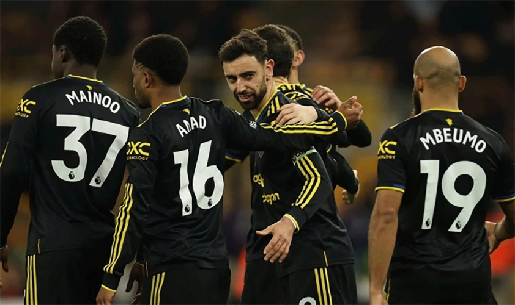

Michael Carrick nói thẳng về khả năng đua vô địch của MU
Michael Carrick tuyên bố ông không muốn gạt bỏ khả năng Manchester United tạo nên một cuộc bứt tốc thần kỳ ở giai đoạn cuối mùa, đủ để biến cuộc đua vô địch Premier League thành câu chuyện đáng tin hơn thay vì chỉ là mơ mộng.
Chiến thắng 2-1 trước Crystal Palace vừa qua giúp MU có 6 trận thắng trong 7 trận kể từ khi Carrick tiếp quản ghế HLV tạm quyền. Mạch thăng hoa ấy đưa Quỷ Đỏ vươn lên hạng 3, trong một cú xoay chuyển phong độ đáng ngạc nhiên.
Khi được hỏi về khả năng cạnh tranh chức vô địch cùng Arsenal và Man City, Carrick thẳng thắn nói: “Trong bóng đá, không thể loại trừ điều gì, nhưng chúng tôi cũng phải thực tế và hiểu mình đang ở đâu. Điều quan trọng là cứ tiếp tục thắng, rồi chờ xem mọi chuyện sẽ dẫn tới đâu.

“Phía trên chúng tôi là hai đội thực sự xuất sắc. Xung quanh cũng có nhiều đội mạnh. Chúng tôi có chuỗi trận tốt, nhưng chắc chắn không được tự mãn. Bạn cần kiên nhẫn, nhưng đồng thời phải sống với hiện tại và tận dụng sự tự tin”, HLV MU nói thêm.
Thống kê càng khiến người ta phải ngước nhìn khi MU giành 19/21 điểm tối đa ở 7 vòng gần nhất, nhiều hơn đội đầu bảng Arsenal 5 điểm, và hơn Man City 3 điểm trong cùng giai đoạn. Đáng chú ý, MU đã lần lượt đánh bại cả Arsenal lẫn Man City ngay ở hai trận đầu tiên dưới triều đại Carrick.
Dù vậy, khoảng cách vẫn là thử thách cực lớn. Khi mùa giải còn 10 vòng, MU kém Arsenal 13 điểm nhưng đá ít hơn một trận, đồng thời kém Man City 8 điểm trước chuyến làm khách trên sân Newcastle vào ngày 4/3 tới.

Trong lịch sử Premier League, chưa đội nào lội ngược dòng từ xa đến thế để vô địch vào thời điểm đầu tháng 3. Tiền lệ gần nhất là mùa 1997/98, Arsenal từng kém MU 12 điểm khi bước vào tháng 3 rồi lên ngôi với cách biệt 1 điểm nhưng khi đó Pháo Thủ đá ít hơn tới 3 trận.
“Dù hành trình sẽ đưa chúng tôi đến đâu, MU vẫn sẽ tiếp tục tiến lên. Tôi luôn nhìn mọi thứ theo hướng cốc nước còn đầy một nửa. Tất nhiên, tôi vẫn thực tế: muốn làm được điều đó, chúng tôi phải thắng rất nhiều trận. Vì thế cứ đi từng trận một”, Carrick nói.
Chuỗi kết quả ấn tượng cũng vô tình nâng tầm vị thế của Carrick trong cuộc đua giành ghế HLV trưởng dài hạn tại Old Trafford. Nhà cầm quân 44 tuổi ký hợp đồng đến hết mùa khi được chọn thay Ruben Amorim hồi tháng 1, như một phương án “câu giờ” để MU cân nhắc các phương án lâu dài. Nhưng sự khởi sắc mạnh mẽ dưới tay ông khiến Carrick trở thành ứng viên sáng giá trên thị trường, thậm chí được nhà cái đánh giá cao.

Dù vậy, Carrick vẫn tránh nói nhiều về tương lai cá nhân:
“Không thể phủ nhận hoàn cảnh hiện tại, nhưng thật sự tôi cũng không có quá nhiều điều để nói. Tôi thích ở đây, thích công việc mình đang làm. Tôi đã nói từ đầu: tôi không đưa ra quyết định kiểu ngắn hạn hay chữa cháy.Dù tôi ở đây bao lâu, trách nhiệm của tôi là đưa ra những quyết định tốt nhất cho CLB về dài hạn”.
Nguồn bài viết: Thethao247.vn